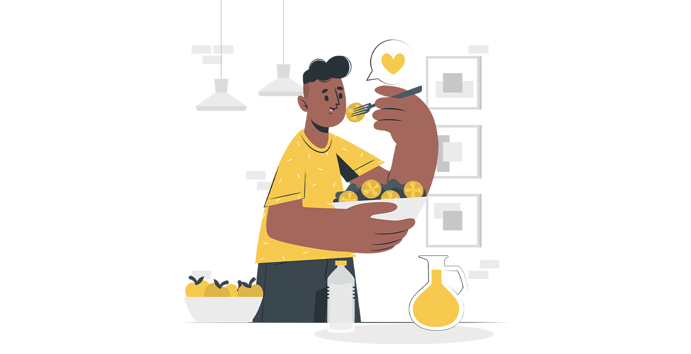
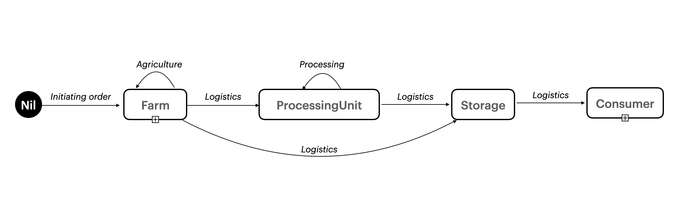
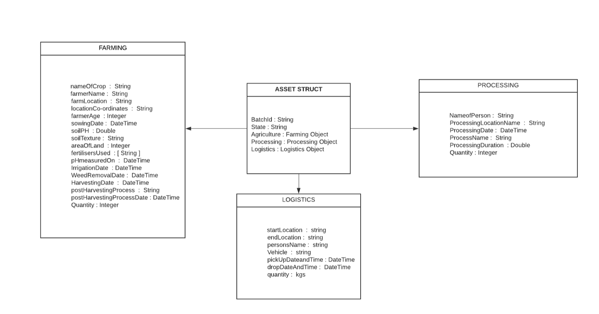
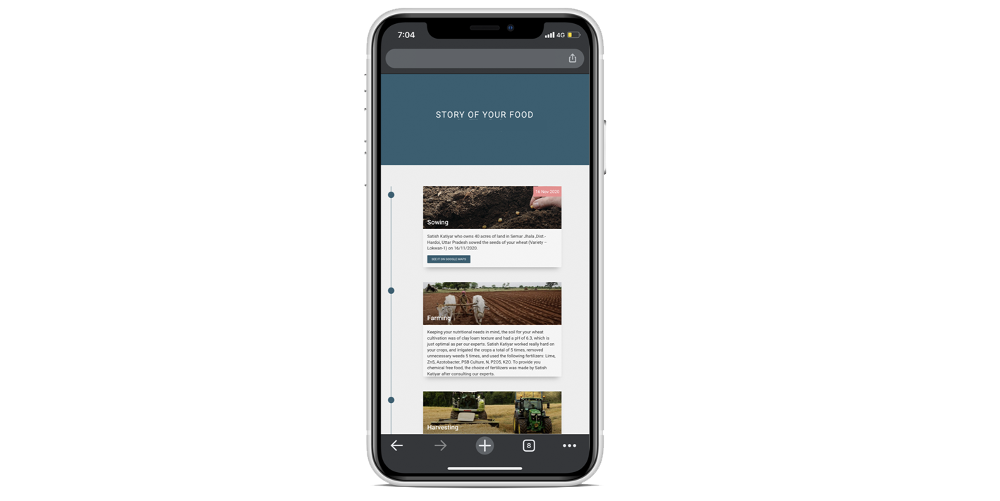

Restoring trust in food through Blockchain
If I go to my nearest grocery store to purchase vegetables or fruits, the only proof of it being fresh are the claims made by the seller/vendor. They even put messages over the racks which tell the consumer that every vegetable they have is free from any harmful chemicals, and are üíØ% fresh. The problem I noticed with this is that these claims are almost never true, and establishing trust amongst the consumer becomes an issue. The end consumer has to rely on how fresh and juicy the fruit looks, but again all that glitters is not gold.

On discussion with some local farmers around Delhi-NCR, it was found that 70% of the produce that they grow, use very harmful chemicals and water being used for growing the crops literally comes from the drain. When they try exporting the produce, the produce never passes the stringent quality checks and are rejected due to very low nutritional values. That produce is dumped to the mandis and end up in our plates. Due to such malpractices of using harmful fertilisers and poor quality water in growing the crops, the farmers are able to fill the plates of the consumer, but at what cost? Just to mention, the crops that they grow for their personal use is actually very different in terms of nutritional value from the ones they dump in the market. Some farmers even have some part of their land reserved for crops to be consumed by their family.
Removing all the malpractices in the food supply chain is something that is not really achievable, but what is achievable is to provide the end consumer transparency. Allowing them to trace where their food comes from, and what all goes into their plates. By making the consumer more informed, they can make better decisions on what to eat and not to eat. In this post, I will be talking about how we can use blockchain to create trust amongst the consumer and the farmers, and how consumers can just trust the network and not what the vendor or the message on the racks say.
Through this project, we wish to create a network through which these malpractices could be reduced. If we capture the journey of the food, from seed to plate and show it to the end consumer, it can eventually help the consumer make well informed decisions about what they wish to buy. We could have used a central database for this, which would be updated whenever the farmer does a task. But again, how would that be different from the vendor telling the consumers that the produce is 100% fresh. We needed something that is immutable. Here comes blockchain into picture. I am pretty sure you must be familiar with what blockchain is, if not you can read the underlying concepts here. In short, blockchain is a digital ledger of transactions which is duplicated and distributed across the entire network, thus making it immutable. This means, that once something is written on the network, no one can change it, not even us! Bitcoin and Ethereum are the two most famous and biggest blockchain networks available. Ethereum provides us with the option of developing Decentralized Applications (dapps) on the network, however they are public networks. Public network, means that anyone in this world can see all the transactions which are made on the network and all the interactions are anonymous, which is something we would not want in our network. Identifying who makes a transaction and when is a key factor of implementing the solution. Also, the process of adding new blocks to the network is through mining. Mining is a process where a large number of machines race to solve a computationally expensive mathematical problem in order to get a reward. This consensus algorithm (Proof of work) is great when there is no trust amongst the different stakeholders of the network (which is true in a public network), but in our case, the stakeholders do have some trust amongst each other, and we wish to have faster times of getting a transaction validated.
Keeping the above points in picture, using Hyperledger Fabric was the best choice. Hyperledger Fabric is an open source enterprise-grade permissioned distributed ledger technology (DLT) platform. The best thing about Hyperledger is that it is open source and very well documentated.
The heart of blockchain network is the ledger. The ledger is the sequenced, tamper-resistant record of all state transitions. State transitions are a result of transactions submitted by participating parties. Each transaction results in a set of asset key-value pairs that are committed to the ledger as creates, updates, or deletes. In the hyperledger fabric, the ledger comprises of a blockchain to store the immutable, sequenced record in blocks, as well as a state database to maintain current state. For capturing the journey of the food, we deal with states and transactions. There are conceptual objects of value, modeled as states, whose lifecycle transitions are described by transactions.
We can represent the life cycle of our crop/produce using a state transition diagram:

We can see how the produce object transitions between “farm”, “processingUnit”, “storage” states using the transactions as described.
The structure of the food object which will be stored in the state object looks like this :

This state was designed keeping in picture what a transaction can update. We had set policies which allowed only a certain organisation to update a part of the state database, (i.e log transactions only which they are allowed). For example, someone who is working in logistics, won’t be able to create an agriculture transaction.
We aimed to capture as much as we could. The only way to capture the information was through forms, which we had provided to the farmers in their smartphones. All the farmer had to do was fill the form and click on submit, and rest was handled in the backend. The transactions get validated, and go through the transaction flow (not discussed in this post), and get logged in the blockchain network. This required some training which was given to the farmers, thus comes with an overhead cost, but helped in tracking anything that goes in the production of the crops. We tried to monitor the tiniest details related to the production of the crop, such as when was the farm irrigated, and when were the weeds removed, and which all fertilisers were used. Again, a team of agricultural experts were available making sure that the best practices were followed during the complete crop lifecycle.
Making the farmers make the entries/transactions in the network was a manual and tedious task, which could be prone of errors. This required constant monitoring and checks by the team, and if the farmers log the data at the correct time and date. Human effort could have been minimized by the use of IoT devices which capture information about the soil and irrigation, or maybe some camera and a Machine Learning model, which track the produce and store information in the blockchain network.
We captured information to the last mile, in the blockchain network, thus making everything real time. Tracking the produce became much easier and the quality was maintained, since the complete process was transparent.
For the consumer to see the journey of their food, we had scraped information from the blockchain network and listed out in a story form which can be seen below.

Blockchain as of now is a nascent technology, and for the adoption of this technology at large scale will take years.
Hoping you liked the post. Do let me know what you think about it!
Powered by Jekyll